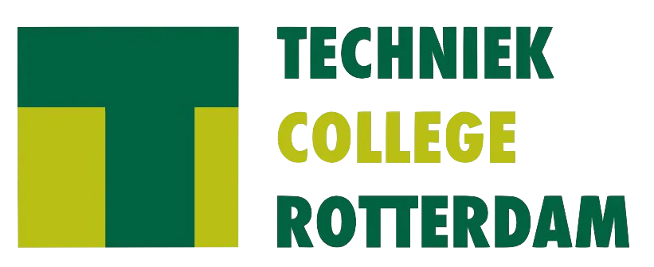

De opleiding
De opleiding Software Developer+ is een mbo-opleiding niveau 4. De opleiding duurt 3 tot 4 jaar. Je leert programmeren en software, websites en apps maken.
Waar kun je werken?
Als software developer kun je werken bij ICT-bedrijven, softwarebedrijven en andere organisaties met een ICT-afdeling. Je kunt na de opleiding ook verder studeren aan het hbo.

Waar kun je de opleiding volgen?
Je kunt de opleiding Software Developer+ volgen bij Techniek College Rotterdam. De opleiding is niveau 4 en duurt 3 tot 4 jaar. Je kunt je online aanmelden voor de opleiding.
Aanmelden